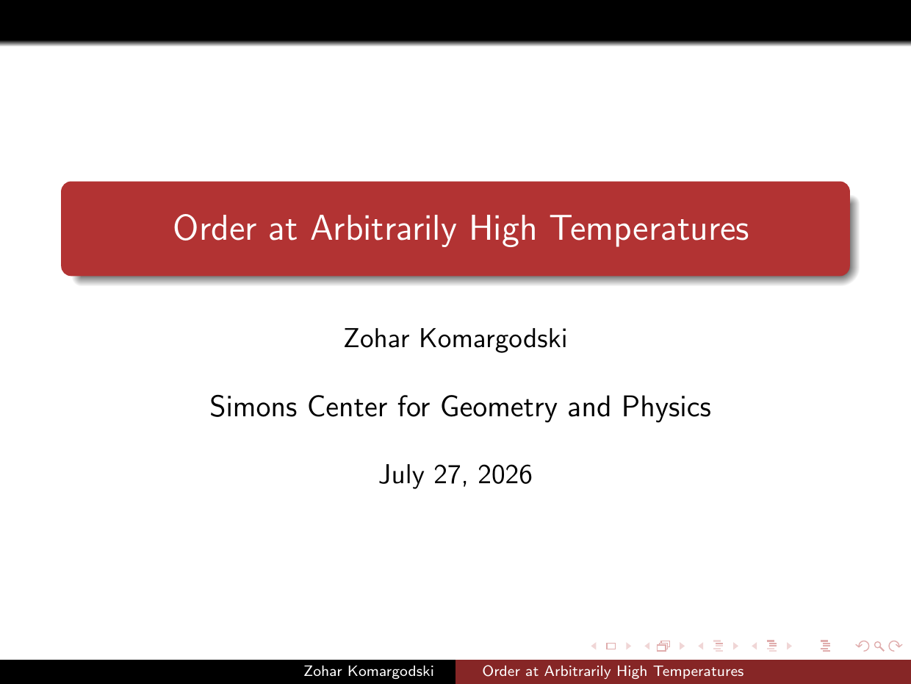
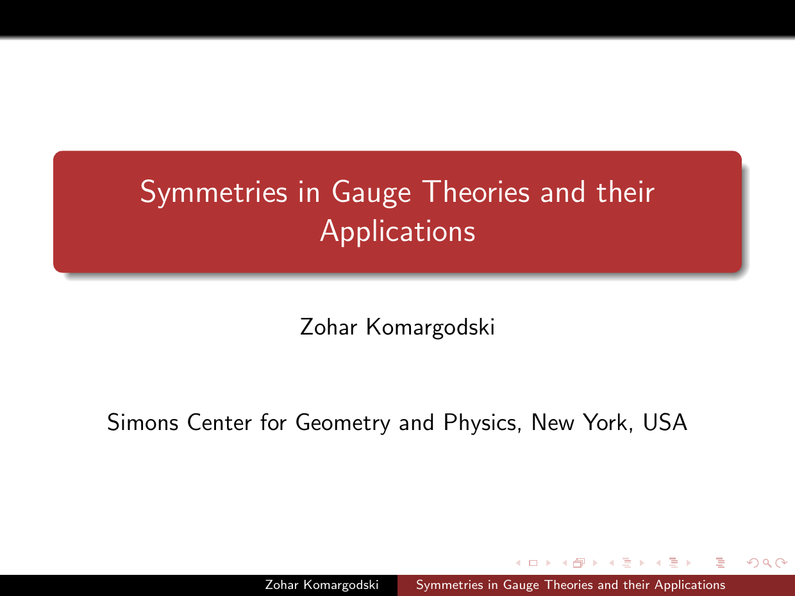

Research & lectures
Notes and talks
Selected lecture notes and presentations on quantum field theory and its applications across statistical mechanics, condensed matter, and string theory.
Selected material
Lecture notes and presentations
The newest material appears first. Each item opens as a PDF in a new tab.

Order at Arbitrarily High Temperatures
Entropy-driven mechanisms that allow spatial, magnetic, and superconducting order to persist at very high temperature.
Open PDF
Symmetries in Gauge Theories and their Applications
Anomalies and topology as non-perturbative tools, from a particle on a ring to center symmetry, domain walls, and Yang–Mills theory.
Open PDF
2026 Cargèse Lectures
Topological and conformal defects, defect RG flows, magnetic impurities, and Wilson and ’t Hooft lines.
Open PDF
Critical Exponents and Effective Field Theories
Large-charge and large-spin methods for conformal field theories, from superfluids and vortices to heavy operators and Regge physics.
Open PDF
An Overview of the Chern-Simons Interaction
A broad introduction to the Chern-Simons interaction and its role across quantum field theory.
Open PDF
Line Defects and the Renormalization Group
Zero-temperature entropy for impurities and its evolution under renormalization group flow.
Open PDF
Line Defects in QFT
An entropy function, conformality, and symmetries in the study of line defects.
Open PDF
Lectures on Quantum Field Theory
Topics in conformal field theory, anomalies, monotonicity theorems, supersymmetry, and S-matrix theory.
Open PDF